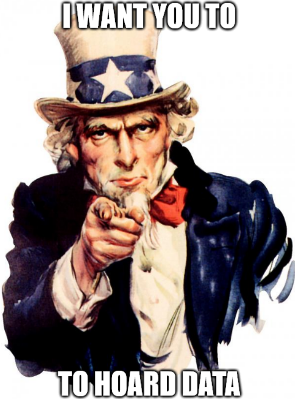

DATA HOARDING; or, THE IMPORTANCE OF DOWNLOADING STUFF IN THE STREAMING ECONOMY
Go to home Edited 11/11/23.
The landscape
Streaming is convenient, relatively cheap (for now), easy on your hardware, and the primary distribution model
favoured by online retailers such as Spotify, Amazon, Netflix, YouTube, iTunes, and pretty much anything else
you can care to note.
(Pretty much.)
Streaming is a bit like renting something. You rent an unlimited pass to watch stuff on Netflix on a monthly basis.
You rent a pass to listen to unlimited music on Spotify, again on a monthly basis. You buy music on iTunes, but that's
actually more like renting a couch--you pay full price for a couch you can take with you for three moves (can sign-in on
three devices) and on the fourth move you buy the couch again. Repeat ad nauseam.
The problem with this renting is twofold:
first, you don't actually own these things (and in the iTunes example you only own them for a limited time. Good luck if
you go through three separate computers in your lifetime, which you likely will) and as such you don't have any right
to keep accessing them once you stop paying for them. Second, because you don't own this streamed/rented content then if
the people who do actually own them--the vendors, the artists, the distributers, etc.--decide they don't want them up
anymore they can just remove all access to them. Your favourite artist doesn't want their debut album up on Spotify? There goes
that option, but there's bootlegs on YouTube. If you want to listen to that ad-free then that's a second subscription, unless you can
bypass the ads.
And that kinda negates the conveniency of streaming because everything has exclusive rights to different shows,
so to watch everything that's popular you need three or four subscriptions to separate streaming sites. Spotify has a monopoly
on music streaming, but that's because it's the absolute worst.
(Here's some
YouTube videos on it if you're nasty.)
And if you pirate your shows? You know that the popular pirating sites move every few months to avoid
takedowns, and leading up to these times they become slower and slower. Your adblocker picks up more and more hits. The
content degrades. Pirating is certainly a solution to the subscription model, but it's not ideal and is definitely only
temporary. Besides, even with an adblocker it can be risky to visit these sites. (And if you're visiting a good site
that's not supposed to host pirate media there's still the chance of it being taken down--and it's kind of your fault
by the way. The more hits an inappropriate upload gets the more visible it becomes and the more likely it is to be taken
down.) Cracked Spotify is still Spotify except it's free.
Streaming also kind of just sucks. More and more often you see people dissecting the bingeing model, which is bad for how
TV is absorbed and it's especially bad for artists. As of writing, SAG-AFTRA is over 100 days deep into a strike and one of their
concerns is how streaming sites like Netflix has basically removed the ability for writers to live on residuals. Its prevalence
of a model is convenient for most people, but if you, say, live in rural Australia with really bad Internet connection then
the most streaming can do for you is 140-280p video with buffering every 15 seconds. Some of these are more important than others,
but I mean to say that streaming isn't perfect even if you do like the rental model.
The devil
If you Google "data hoarding" what you get are a bunch of articles talking about the disorder--saving terabytes
of "useless" data in the worry that it may one day otherwise go missing. Now, obviously I'm not rooting for you
to develop an anxious disorder that has you save every image on Pinterest that you come across. (Unless those images
are really important.) But it's not useless and it's not automatically a symptom of a disorder to care about
preservation in the digital space. Sure, if you're downloading gigabytes of baby names sites you may need to reconsider your
priorities, (It's different when I download a bunch of Medieval names archives as html pages. Some of their links
are dead already! Where else am I going to find fantasy character names!) but some things are important. A names site
painstakingly curated by someone very devoted, I'd argue, is worth more than most baby names sites spewed out by AI to dominate
search results. If that ever went down it would be a shame. Isn't that worth preserving?
It's preserving data. It's also the way out of the streaming hellscape. If you download your TV shows then you
aren't dependent on Hulu maintaining the rights to host it. If you save your favourite band's entire discography as FLACs or
MP3s then if something gets blocked in your country or they walk back a release it's not lost. That's not even touching on the
(admittedly scant) possibility that a streaming service will fail and you'll lose access to all its files. Just remember that
all those YouTube bootlegs, all those streaming files on pirating sites, exist because someone, at some point, downloaded the files.
The fact is that downloading is preservation. The cloud is just space on someone else's hard drive, be it Google data centres or
the disc of Steve, who has been faithfully maintaining his webpage on car parts since 2006. You can't be sure these hard drives
will be accessible to you forever. You might as well make sure that what they have is accessible on yours.
The Odyssey; or, It Might Be For You
The cost
Not everyone has the time, space, or patience for data hoarding. It's not something that everyone would even take an interest in,
although if you have a Neocities account you're more likely to be that type. It's sometimes tedious and from the outside it can
look pretty useless--kind of like making a personal webpage in the age of social media. Having an Instagram page is way more
conveninent than focussing on a Neocities page, but it isn't as rewarding.
Not everyone has the time or patience to download and sort files.
Not everyone has the space for these files, which is why data hoarders care a
lot about their cloud storage or their external hard drives and their backups. (Personally, I'm struck with a wave of envy when
I see someone with a 10TB drive.) The good news is that space is relatively cheap.
The benefits
With your own data collection you are the curator, the archivist, the audience, and the procurer. It's a personal library
like back when we all had DVD shelves or VHS collections. (You may not remember these times and get irritated when people get
misty-eyed talking about them. Bear with me.) Maybe you still have those collections, so you already know the benefits.
Obviously, it's accessible offline. What's available is only what you have, which means that you aren't going to be recommended
algorithmic muck. Whatever ads you have aren't live ads, and are instead more like bugs encased in amber. And, of course, you
own this collection. No one's going to come along at the end of the month and ask you to pay up or you lose your entire M*A*S*H
collection.
So the benefits of a digital collection are ownership, in that you really do possess a copy of the file.
It's not something you're renting.
Depending on where you're hosting it (I do recommend external hard drives over cloud storage,
but I'm biased) it's also available offline, and will be until you delete it--there's no expiration like there
are for Netflix or Spotify offline downloads.
It's adfree and you're not paying a subscription for it to be adfree.
It's preservation--it's not uncommon for previously lost media to be found because someone at some point
downloaded it before it went offline. Maybe your copy of something could be the copy that saves it from being lost altogether.
It's curated; it's only what you've already decided you want saved, and nothing else. This means that it's not
based on a recommender algorithm, and that's what I think is one of the biggest draws of them all. Recommender algorithms tend to
classify people into categories, using similarity with other user categories to recommend you content. If you're a big fan of the Cure,
for example, you may also like the Smiths--although if you're familiar with those artists you would already see the flaws there.
(I'm bisexual and I'm not paying Morrissey anything when I listen to his music so I'm comfortable liking both, personally.) This means
that you're going to be recommended stuff that's already like what you're into, which disincentives discovery and privileges art that
is already popular. So...
You're more likely to discover new stuff you wouldn't have discovered otherwise. Without an algorithm you're
going to have to take an interest in what you like to discover more, which means a couple of things. Maybe you'll use a few different
algorithms to recommend you music, like YouTube recommended videos and Bandcamp feeds. Maybe you'll use user-submitted recommendations,
like Album of the Day or r/listentothis.
Maybe if a friend already downloads stuff then you can make a copy of their files, and discover some new things in the process. Maybe you
find your way onto a site where you can upload files, and by scrolling through a user's profile discover
some of their uploads that look interesting. Any which way you go, you're taking an active interest in discovery instead of relying on a
pigeon-holing algorithm, and that's better for diversifying your interests and for distributing eyes on media away from just the popular,
recommendable artists.
Your data can't be used for making money. I don't just mean user data to advertisers, although that may be something
you care about. (I do, but some people don't.) I also mean things like Spotify playlists, which are probably one of the biggest draws to
Spotify. The playlist functionality is great for promoting Spotify as somewhere you can share and discover new playlists. With hoarded data
your listening and watching data is private--no more worrying about your Spotify Wrapped! You're free to listen to
Catboys 500 times over!--
and your playlists can't be used a draw for that site unless you really want them to be.
(I actually think YouTube is better for finding
really weird playlists, anyway. Try looking up Harry Potter RP playlists there. It's definitely not some corporated curated playlist,
and it may have some real gems. (Case in point: I discovered the Jins
through, of all things, a 2023 The Batman Riddler playlist.))
The safety of your files relies on you and not a third-party. Sure, if it all goes wrong then it's your fault, but
that also means you can make the efforts to prevent loss and to do it right.
It's satisfying and can be fun. When you have your favourite music all downloaded there's a certain
peace that comes with that. It can also be fun to curate music like your own personal library of Alexandria, although, again,
that may come with a specific kind of person that enjoys making Neocities pages or entering data in spreadsheets.
The how; or, Getting started
I.
The first thing you're gonna want to do is negotiate where you're going to save all this stuff
and how you're going to make backups. (You're gonna make backups, right?)
Some people are very fond of cloud storage and backups. I see the utility of these things, but personally I wouldn't
ever go there. For a start, it removes your ability to secure your own data; it relies instead on the service provider. It also
means that it isn't accessible offline, which is fine if you have a good and consistent Internet connection. I don't.
What I'd really recommend are external hard drives. There are a lot of different kinds out there so you can research what
seems like the best choice for you. I have two Western Digital Elements drives, which work pretty well for me. The first one
is the one I use every day for listening to music, backing up documents, and watching TV. The second I only use once a month
for backing up the first one. You may want to use a combination of cloud and external hard drive storage, which is probably
sensible. This article covers some alternatives,
but don't be intimidated.
You might then want to look at what you already have saved to your device. Images? Documents? A SasuNaru AMV that's been sitting
in your Downloads folder for eight months? Set up your storage bucket (hard drive, cloud account, whatever) into some folders for
chucking stuff in. You can always change it later. When I first got started not so long ago I had all my movies and TV shows in
the same folder, which slowed everything down from loading the list to actually locating stuff. Now I have a separate folder for TV
shows and movies.
My current main hard drive folder organisation is the following:
- BACKUPS
- Lectures
- Friend's backup
- Movies
- Music
- Podcasts
- Programs
- Text
- TV
You can and probably will have a different organisational structure according to what you want to
save and what you access most frequently.
A good place to poke around is r/DataHoarder for getting some information
and to see what people recommend. Especially check out
this thread
.
DataHoarder.io could be useful, especially on
this page that talks about some strategies.
II.
Then comes the matter of pulling your favourite media off the streaming sites into your storage bucket. I can't do much here but
direct you to the How about getting money to artists specifically? section below.
(Refer to the first point under Code of conduct for why that is.)
Here's a list of some good, wholesome, legal sources (yes, really):
- Once again, Bandcamp.
- The Internet Archive. It's not just the Internet! It includes a bunch of royalty-free music,
live acts, newspaper records, and a lot else. (If you want to donate to help digitial preservation then THIS is the
site you should support. There's a donate option on the home page.)
- Project Gutenberg and similar sites for freely-accessible literature.
- Open directories in general. Okay, I'm not sure how legal these are. They're probably not very. But they're still
very interesting and are worth checking out (investigate some crawlers and search tools, or try formatting
your own search! A good start might be Intitle:index.of "search terms" (file type|file type|mp3).).
HUGE content warning for these--you never know what a directory might hold,
and it's not uncommon for an OD to contain NSFW, and they might be a trojan horse for viruses.
Individual discretion is necessary. But they can also yield some
fascinating results, so it's worth investigating some if you're happy to give it a try.
As for other stuff--it's easier than you would think to find some good sources. Scope out social media for some methods
(Reddit is good for this because Reddit is good for everything, if you're a fed reading this then I'm talking about finding good
independent sites for purchasing content legally) and try some Googling. Check out if you have any friends that have some
copies of media to get you started. If you're already experienced in the pirating and cracked apps scenes then you probably
already have a good idea where to start.
III.
Enjoy your collection and have fun, but remember to be sensible. Be thoughtful of the community and don't snitch!
If you're in a position to do so, consider sharing some files with your family and friends. Sharing information is how we
archive everything, and archiving media, be it music, TV, or the actual Internet, is and has to be a communal activity.
Code of conduct
- Don't share your links. Loose lips sink sources, and if you post a link to a cool site or directory that's a sure-fire
way to make sure it gets taken down. Share them among your friends if you're sure they're not gonna report it, but don't
post it to social media! There are some places that are explicitly for posting links, but they have their own rules and
are subject to frequent contingency plans.
- Be considerate. If someone's uploaded a bad copy of something then you can't get entitled about it. If it's
an earnest mistake they may appreciate a heads-up, but definitely don't complain if it's in a language you don't speak.
Some people speak Spanish, you know.
- Use your common sense. If you've been told you're getting an MKV file and what you're downloading is an EXE,
cancel your download! Likewise, scan your files before you open them. If you have a ZIP file then scan it too, and if you
can check the contents before opening it. If you're on a sketchy site then be careful about downloading anything. If you
can, check on Reddit or other trusted places about whether or not a site is trustworthy.
- Be careful. Make sure you're running some kind of antivirus and that you download from
credible or halfway credible sources. Your motto should be that any time you download a file you're risking being infected,
which is why you need to keep external backups of your files (in case of ransomware encryption) and that you don't have
anything lying around that might be disastrous to have lost. If you download something your computer may be compromised.
How about getting money to artists specifically?
It's highly important to pay artists (if you can). Big TV
show execs won't have much use for your money, but support TV and film writers and other creatives and
where you can. For example, you should absolutely buy music legally--as long as it actually pays the artist,
not their labels or a predatory hosting service. And if you can't at the moment, consider doing it in
the future. If they don't have music where you can pay for it and download it, consider buying some merch
or attending a concert.
And I do mean this sincerely! Support people who make stuff!
-
Bandcamp is a fantastic site, although it may die
soon. If you want to pay artists a living wage for their art then I highly recommend using Bandcamp to download some music.
-
As for TV and Movies--honestly, the best solution I've found so far is buying them on YouTube or iTunes or whatever is
less evil, then pirating a downloadable copy. (You can screenrecord on YouTube but definitely not on iTunes, by the way.)
Kind of makes you wish that streaming wasn't so popular so that there were more services where you could buy and
download media legally! I spend quite a bit on Bandcamp and I would definitely pay to download legal
copies of a bunch of shows (that isn't DRM protected--I want to be able to play these on VLC and to not
risk losing access to them if the DRM-locker goes out of business).
-
Your other option is to buy physical media such as discs and CDs and to rip them to digital files, which is completely legal
(for personal use) and helps support artists.
-
Some artists also have Patreons or KoFi accounts. If you're downloading something and they have this as an option,
you should send them some money!
Advice
- Spend some time to organise your data. Folders are your friend. Metadata is also incredibly useful,
especially for music files. VLC Media Player is good for entering metadata.
- MAKE BACKUPS! Don't lose your data! Even if it's just to a second hard drive or cloud account,
make some time each month (or more or less frequently) to back up your recent changes to a second or third location. Don't be like
this guy who lost 30TB of data.
-
Revel in being the friend that has a copy of everything, or can access a copy of anything,
when someone is looking for something. It feels sweet. Check out this pin a beloved friend made for me:

You should of course purchase everything and through legal vendors. It's important to operate within
the laws of your country and state. Capitalism isn't so bad. Everything is fine.